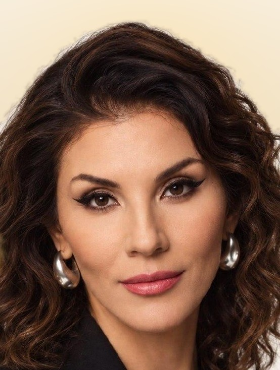
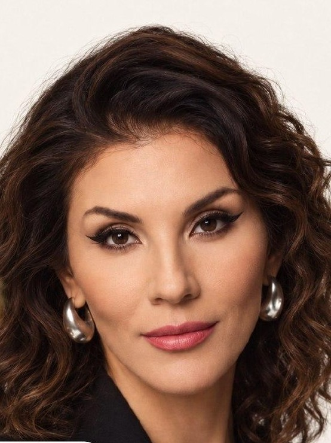
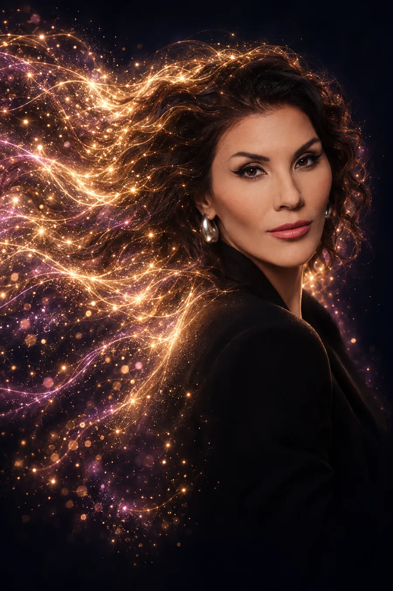
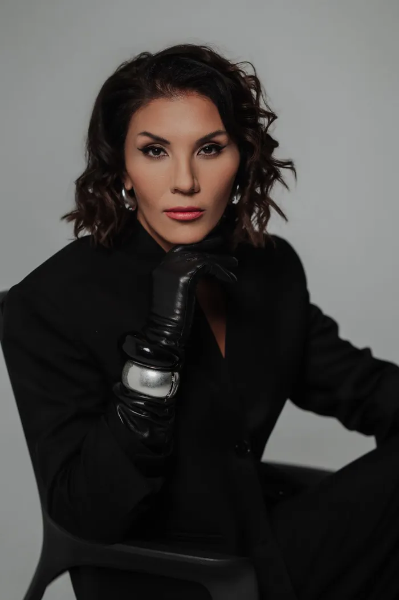
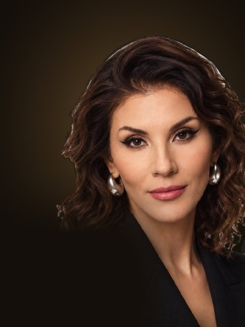
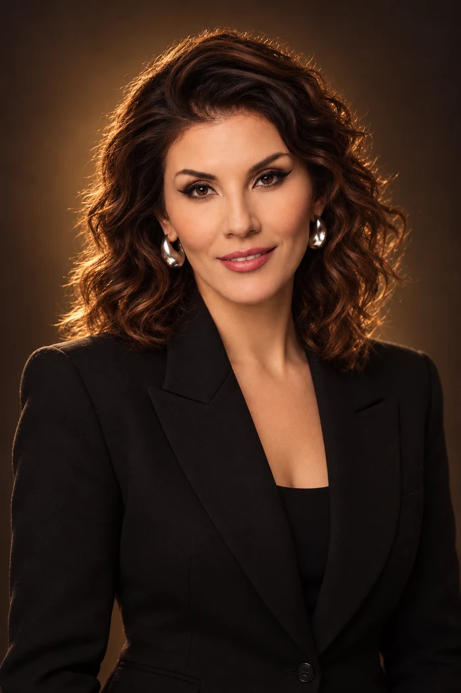

Как за 4 дня выйти из угнетающих чувств
на новый уровень дохода, энергии, отношений и реализации. Эфир 1 практикума «Новая реальность»

Что будет за 4 дня
находим затык и убираем угнетающие чувства
возвращаем энергию и ставим защиту от откатов
прямой путь к цели без саботажа
всё даётся легко
Ваши подарки за участие
как удвоить доход до Нового года
спокойствие, уверенность и лёгкость
как построить счастливые отношения

Я врач-психотерапевт, а не блогер
лет практики
консультаций
выпускников
Я обучаю специалистов методу ДПДГ
Человек – это машина
Её можно настроить на болезнь. А можно настроить на успех
Где вы сейчас
Напишите в чат цифру
Работаю в найме. Напишите, кем
У меня своё дело
Работаю на себя: коуч, массажист, консультант, психолог, таролог
Пока ищу себя
Вы думали сменить сферу?
Как часто эта мысль приходит? И почему вы до сих пор этого не сделали?
Закройте глаза на минуту
Вспомните себя 20 лет назад. О чём вы мечтали? Кем хотели стать?
Это совпадает с тем, как вы живёте сейчас?
Что вы чувствуете, когда сравниваете мечту и реальность?
Кому кажется, что уже поздно?
Напишите «+» в чат, если такая мысль есть
Давайте честно посмотрим на реальность
Четыре сферы жизни, и в каждой – одно и то же чувство
Деньги
Своё дело не идёт, или сокращение на работе
Мошенники, неудачные вложения
Деньги утекают: машина, зубы, сборы на ребёнка
Вы пашете 7 лет, а доход тот же
И тут вы задумываетесь, что что-то идёт не так
Сфера 1. Деньги
Отношения
Рядом не тот человек, или годами живёте без брака
Одиноко вдвоём
О своих страхах не расскажешь – обесценит
Вы держите всё на себе
И тут вы задумываетесь, что что-то идёт не так
Сфера 2. Отношения
Друзья и окружение
Вы для всех спасатель
После встреч вы выжаты как лимон
Подруги подпитываются за ваш счёт
Окружение тянет вас вниз
И тут вы задумываетесь, что что-то идёт не так
Сфера 3. Друзья
Здоровье
Всё внимание уходит на тело
Постоянная тревога
Анализы в норме, а врачи разводят руками
И тут вы задумываетесь, что что-то идёт не так
Сфера 4. Здоровье
Вы как будто в болоте
И чтобы выбраться, нужен правильный спасатель и правильный инструмент
Вы идёте вверх по эскалатору, который едет вниз
Если идёте медленнее эскалатора, вы всегда внизу. Даже когда стараетесь
Мир меняется быстрее, чем долгая терапия
Искусственный интеллект ускорил всё. Маленькие перемены за три года станут неактуальны
Что вы уже пробовали
Через несколько дней – откат
Всё возвращается на круги своя
Сегодня вы получите
Пошаговый план, с чего начинать психотерапию
и формулу больших денег
Посмотрим на живые примеры
Где именно вы себя останавливаете
Поднять цену на свои услуги
Вы знаете, что пора. Компетенции уже есть. Но страшно, что все уйдут
Закон 1
Поднять цену работает всегда
уйдут не все
останутся те, кто ценит
Попросить прибавку
Страх перед начальником. Ощущение, что выпрашиваете. Стыд перед коллегами
Проявляться на камеру
Вы понимаете, что нужно вести соцсети. Но в голове одно: «Что люди подумают?»
Работа без удовлетворения за 70 тысяч
А вас тянет в психологию: подруги звонят за советом, люди сами вам открываются
Пять страхов, которые держат на месте
У меня не получится
Мама и подруги скажут: «А я тебе говорила»
Муж скажет: «Тебя разводят сектанты»
Я не смогу помочь человеку
У меня не будет клиентов
Закон 2
Где много предложения
там есть спрос
тревожность у людей растёт
Страх, тревога, вина, обида, стыд
Пять угнетающих чувств, которые управляют вашим доходом
Прямая связь с деньгами
не поднимаю цену, не прошу прибавку
держусь за старый доход
не проявляюсь, «что подумают»
Вина и обида: связь неочевидная
Одна часть вас хочет содержать маму. Другая не хочет. И вы застреваете между ними
«Как дорого» при каждой оплате
Каждый раз вы вините деньги и обижаетесь на них. Обида растёт снежным комом
Откуда стыд
Из детства: «я недостойна». Вы заходите в дорогой магазин и чувствуете, что вам здесь не место
Разберём пять страхов по одному
Страх 1. «У меня не получится»
Вопрос не в том, получится ли. Вопрос: до какой точки боли вы готовы дойти, прежде чем начнёте?
Страх 2. «А я тебе говорила»
Это обесценивание. Слушая его, вы живёте чужую жизнь
Страх 3. «Тебя разводят сектанты»
Он вам муж или отец? Оковы финансовой зависимости снимаются вашим доходом
Страх 4. «Я не смогу помочь»
Это «я не до…». На обучении вы получаете все инструменты
Страх 5. «Не будет клиентов»
С 4-го месяца обучения маркетологи приводят клиентов. Лучшим ученикам – клиенты из соцсетей
«У меня всё нормально»
Самая частая фраза. И самая частая защита психики
Не помните детство?
Это не плохая память. Психика стёрла то, что было слишком тяжело
Как психика защищается
«это было не со мной»
«я не помню»
«у меня было прекрасное детство»
«так было надо»
Почему одни психологи зарабатывают много, а другие мало?
И врачи. И риелторы. И любой специалист
Всё начинается с потребности
У человека болит зуб, он идёт к стоматологу. В психологии тоже: есть проблема, и её хочется решить
Формула больших денег
Реши проблему человека
за самый короткий срок
с минимумом его усилий
«Я годами хожу по кругу»
«Не могу пробить финансовый потолок. Деньги приходят и быстро утекают. Что делать?»

Аксиома 1. С вами всё нормально
Вы не ущербная и не «какая-то не такая». Вы просто делаете что-то не то и не так
Изменить нужно две вещи
понять причины и следствия, почему вы там, где вы есть
то, что запускает повторяющийся сценарий
Реакция берёт верх над мышлением
Вы понимаете, что пора идти в соцсети. Но страх «что подумают люди» сильнее
Всё понимаете, но ничего не меняется?
Причина одна: вы не меняете реакции
Спустимся на этаж ниже
Откуда берутся наши реакции?
Программы, которые управляют жизнью
Родовые сценарии
Прадед пил, дед пил, отец пил. Сценарий передаётся, пока его не остановят
Программа «война с мужчиной»
Женщина выбирает партнёра по программе, как ключ к замку. И снова воюет
ТДО
Травматический детский опыт
реакции
повторяющиеся сценарии
Тест: 10 вопросов о вашем детстве
До 18 лет. Отвечайте «да», если это было часто или очень часто
Вопросы 1–3
Вас ругали, оскорбляли, угрожали, унижали? Или вы боялись физического вреда?
Вас толкали, хватали, шлёпали, бросали в вас чем-то? Или били до следов?
Взрослые или те, кто старше вас хотя бы на 5 лет, трогали вас с сексуальным подтекстом или совершали половой акт?
Вопросы 4–6
Вам казалось, что никто в семье вас не любит и не считает важным? Что в семье не принято заботиться, выражать теплоту и поддерживать?
Вы были голодны, в грязной одежде, вас некому было защитить? Родители были пьяны или «под кайфом» и не могли заботиться о вас или отвести к доктору?
Ваши родители жили раздельно или были в разводе?
Вопросы 7–10
Вашу маму или мачеху толкали, били, угрожали ножом или пистолетом?
Вы жили с пьющим человеком, алкоголиком или тем, кто употреблял наркотики?
У кого-то из живущих с вами была депрессия, психическое заболевание или попытка самоубийства?
Кто-то из живущих с вами был в тюрьме?
Сколько баллов вы насчитали?
Напишите цифру в чат. От 4 баллов – это повод для серьёзной работы
Как ТДО проявляется в каждой сфере
потолок, долги и кредиты, тревога за деньги
«хорошая девочка», «со мной что-то не так», мама для мужа, «всё сама»
постоянные проблемы
серая мышка, тише воды ниже травы
Человек вырастает с букетом травм
Реакции становятся автоматическими. Вы перестаёте их замечать
Поэтому с возрастом время летит быстрее
Человек всё больше живёт на автопилоте
Как ТДО бьёт по деньгам
Вы не позволяете себе
«Богатым быть опасно»
Страх перед теми, кто выше
В стрессе держитесь за старый доход
Деньги не лечат тревогу
С деньгами она только растёт
Автоматизм можно расщёлкнуть
Метод ДПДГ
автоматизм разжимается
появляется выбор
Вы пошли к психологу. Что будет дальше?
Разные специалисты – разные методы и разный результат
Методы психотерапии
КПТ – хорошая, но долгая
Два-три года на небольшие изменения. Сама реакция при этом не меняется
Разговорная терапия
Поговорили, стало легче на час или на день. Потом всё возвращается

В ДПДГ сразу виден саботаж
Нужно следить глазами. И сразу видно: не хватает концентрации, лезут мысли
Тело не врёт
Слёзы, жар, тяжесть, тошнота во время сессии. Тело показывает, где проблема
Мозг: кора и амигдала
Амигдала запускает реакцию раньше, чем кора успевает подумать. ДПДГ меняет нейрофизиологию

Шесть тезисов: 1–3
Расстановки, родовое, энергетика – только после неё
Второй – травмоориентированная КПТ, но она долгая
Гипноз и телесная терапия – вспомогательные
Шесть тезисов: 4–6
как восприятие меняет поведение
Травму не лечат гештальт, психоанализ, семейная и системная терапия
через нейрофизиологию и ДПДГ
Травма излечима
Всемирная организация здравоохранения рекомендует ДПДГ для работы с травмой
ДПДГ за 1000 рублей на Авито не работает
Нужен комплекс. Его дают только на курсе ПКТ
Почему в России популярна разговорная терапия?
Она дешёвая, ей легко научиться, и результат идёт долго
Две модели специалиста
Ваш чек определяет ваше окружение
Клиент за 5 тысяч рекомендует тех, кто платит 5 тысяч. Клиент за 50 – тех, кто платит 50
Чек = инструменты
Инструменты
эффективность
скорость и результат
высокий чек

Как стать тем, кто быстро меняет жизни?
Сначала пройти путь самому
На курсе ПКТ вы сначала прорабатываете все 10 ТДО. Все и полностью
Люди видят ваши изменения
И вы начинаете работать с клиентами уже на обучении
Как приходят в профессию
Люди быстро вам открываются
Вы ясно видите их ситуацию и даёте дельный совет
Вас за это благодарят
Высокий и стабильный доход, вы ценны людям
Психолог краткосрочной терапии
Авторский метод ДПДГ 3.0. Диплом при любом высшем образовании
Как таблетка для похудения
После ДПДГ нужное действие перестаёт требовать усилий
«Нет, мне неудобно»
Мама в родительском чате впервые спокойно отказала. Без вины и без объяснений
Робот, который живёт в вашу пользу
Автоматизмы остаются. Только теперь они работают на вас
Доход – это самое лёгкое
Я хочу показать, как метод работает там, где ничего не помогает
История студентки
Её случай – её словами
Что уходит попутно
Говорю как врач
Практика прямо сейчас
Сядьте удобно на стуле
Представьте себя без этих программ
Вдох. Выдох. Что вы чувствуете в теле?
Вот что мешает
Именно это мы убираем на программе
Завтра, день 2: «Бесконечный поток»
Находим, куда утекали силы
Перекрываем утечки и восстанавливаем силы
Ставим предохранители от откатов
Не пропустите
Подарки получают участники всех дней
День 4 – VIP «Магнит для масштаба»
Спасибо, что были со мной
До встречи завтра на эфире